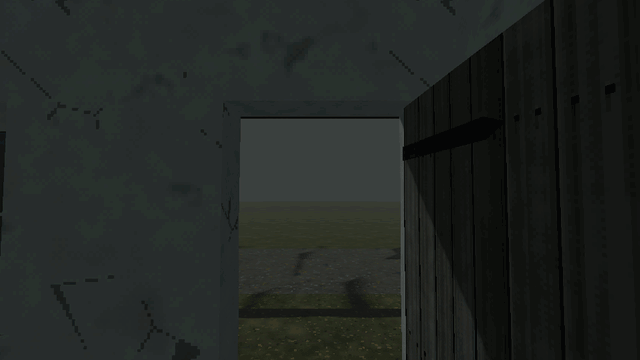

Tutorials › Light Up the House the Player Just Left
How to Light Up the House the Player Just Left in Godot 4
Walk out of a house and, behind your back, its windows glow and a lamp burns inside; come near it again and it goes dark before you reach its door.

An empty village is scariest when it is not quite empty. This script, on a Node3D over your houses, does one thing: the house the player just walked out of lights up behind their back, its windows glowing and a lamp burning inside, and when they come back it goes dark before they reach its door. Each house is a child of the node; its windows are the meshes in the group "window"; its inside is its footprint, a wall's thickness in, at any height. At most a few houses burn at once, the one lit longest going dark first.
Script: house_left_lit.gd (MIT) · Godot 4.3 or newer · its folder on GitHub
How to use it
- Add a
Node3Dand attachhouse_left_lit.gd. Put each house under it as a child: anyNode3Dwith its meshes under it. - Put each window's
MeshInstance3Din the groupwindow. The glass is the surface whose name has "glass" in it (a surface named..._inis the inside face and stays dark), or the mesh's first. - Set
lit_glassto a glowing material for a lit window (an unshaded or emissive one). - Put the player in the group
player. Its origin may be at its feet: a house's inside is its footprint,wallmetres in, at any height. - Tune
delayandleave_distance(how long and how far out before a house lights),approach_distance(how near before it goes dark) andmax_lit. Calllight(house),darken(house)oris_lit(house)from your own scripts.
What it needs
- Godot 4.3 or newer.
- Houses as
Node3Ds with their meshes under them, windows' meshes in the groupwindow, a player node in the groupplayer, and a glowing material.
Try it free
The Cordatix PSX Horror Free Sampler has a small stone house of Cordatix PSX Horror Village to try it on: its walls with a window and a door, the corner, a 4 m roof and its gable, the floor, the house door and the window in dark, lit and broken glass (cordatix/psx_horror_village/pieces/, the lit glass cordatix/psx_horror_village/materials/vi_glass_window_lit.tres), the dirt road tile in four looks, and this script as cordatix/psx_horror_village/sampler/house_left_lit.gd. V in the sampler's demo room opens its village taste: three houses on a night road under this script. The pack's own empty village adds the street lamps that die as you pass under them, the shutters that bang in a gust, every house the house builder makes and its signals.
How it was tested
In Godot 4.3 and 4.7.2, with three houses of stand-in boxes and again with the free sampler's wall, window wall, window and lit glass, the player standing on the floor (its origin at its feet): nothing lights while the player is inside, nor before the delay; the house the player left lights up, its window showing the lit glass on its outside face and a lamp burning inside; it goes dark as the player comes near and its lamp is gone; at most max_lit houses burn, the oldest going dark first.
The code
extends Node
## How to Light Up the House the Player Just Left in Godot 4
## Cordatix Godot 4 PSX tutorials, MIT licensed: https://github.com/GoldenSparrow-Dev/cordatix-godot-psx-tutorials
## The devlog: https://cordatix.itch.io/cordatix-psx-horror-village/devlog/1744212/how-to-light-up-the-house-the-player-just-left-in-godot-4-cordatix-psx-horror-village
## Light up the house the player just left (Godot 4.3+). Walk out of a house and, behind your back, its windows glow
## and a lamp burns inside; come near it again and it goes dark before you reach its door. Each house is a Node3D child
## of this node; its windows are the MeshInstance3D nodes under it in the group "window" (their glass is the surface
## whose name has "glass" in it, an inside face's "..._in" aside, or their first); its inside is its meshes' footprint,
## `wall` metres in, at any height. The player is the body in the group "player".
## The glowing glass a lit house's windows show.
@export var lit_glass: Material
## Seconds after you are out before the house lights up, and how far out you must be.
@export var delay := 2.0
@export var leave_distance := 6.0
## How near a lit house you come before it goes dark.
@export var approach_distance := 5.0
## Houses lit at once at most: the one lit longest goes dark first.
@export var max_lit := 2
@export var wall := 0.3
@export var light_color := Color(1.0, 0.72, 0.42)
@export var light_energy := 1.6
var _inside: Node3D = null
var _left := {} # house -> seconds since the player walked out of it
var _lit: Array = []
var _boxes := {}
func _physics_process(delta: float) -> void:
var player := get_tree().get_first_node_in_group("player") as Node3D
if player == null:
return
var at := player.global_position
var now: Node3D = null
for house in get_children():
if house is Node3D and _inside_of(house, at):
now = house
if now != _inside:
if _inside != null:
_left[_inside] = 0.0
_left.erase(now)
_inside = now
for house in _left.keys():
_left[house] += delta
if _left[house] >= delay and _distance(house, at) > leave_distance:
_left.erase(house)
light(house)
for house in _lit.duplicate():
if house != _inside and _distance(house, at) < approach_distance:
darken(house)
## Whether a point is in a house: within its footprint, at any height (a player's origin is at their feet, on the
## floor, below the bounds' bottom brought in).
func _inside_of(house: Node3D, at: Vector3) -> bool:
var b := _box(house)
var p := house.to_local(at)
return p.x > b.position.x and p.x < b.end.x and p.z > b.position.z and p.z < b.end.z
## A house's footprint, in its own space: the bounds of its meshes, `wall` metres in on every side.
func _box(house: Node3D) -> AABB:
if not _boxes.has(house):
var box := AABB()
var first := true
for mi in house.find_children("*", "MeshInstance3D", true, false):
var b: AABB = house.global_transform.affine_inverse() * (mi as MeshInstance3D).global_transform \
* (mi as MeshInstance3D).get_aabb()
box = b if first else box.merge(b)
first = false
_boxes[house] = AABB(box.position + Vector3(wall, 0.0, wall), box.size - Vector3(2.0 * wall, 0.0, 2.0 * wall))
return _boxes[house]
## How far a point is from a house, along the ground (0 inside).
func _distance(house: Node3D, at: Vector3) -> float:
var b := _box(house)
var p := house.to_local(at)
var q := p.clamp(b.position, b.end)
return Vector2(p.x - q.x, p.z - q.z).length()
func light(house: Node3D) -> void:
if house in _lit:
return
_lit.append(house)
if _lit.size() > max_lit:
darken(_lit[0])
for mi in _windows(house):
mi.set_surface_override_material(_glass(mi), lit_glass)
var lamp := OmniLight3D.new()
lamp.name = "LeftLamp"
lamp.light_color = light_color
lamp.light_energy = light_energy
lamp.position = _box(house).get_center()
lamp.omni_range = _box(house).size.length() * 0.6
house.add_child(lamp)
func darken(house: Node3D) -> void:
if not house in _lit:
return
_lit.erase(house)
for mi in _windows(house):
mi.set_surface_override_material(_glass(mi), null)
var lamp := house.get_node_or_null("LeftLamp")
if lamp != null:
house.remove_child(lamp)
lamp.queue_free()
func is_lit(house: Node3D) -> bool:
return house in _lit
func _windows(house: Node3D) -> Array:
var out: Array = []
for mi in house.find_children("*", "MeshInstance3D", true, false):
if mi.is_in_group("window"):
out.append(mi)
return out
## The window's glass: the surface named "...glass..." (not an inside face's "..._in": that one stays dark), or its
## first.
func _glass(mi: MeshInstance3D) -> int:
for i in mi.mesh.get_surface_count():
if mi.mesh is ArrayMesh:
var n := (mi.mesh as ArrayMesh).surface_get_name(i)
if "glass" in n and not n.ends_with("_in"):
return i
return 0
The devlog and the pack
The step-by-step walkthrough is the devlog How to Light Up the House the Player Just Left in Godot 4 (Cordatix PSX Horror Village) on itch.io, written for Cordatix PSX Horror Village, a PS1-style asset pack by Cordatix for Godot 4, Unity, Unreal and Blender.